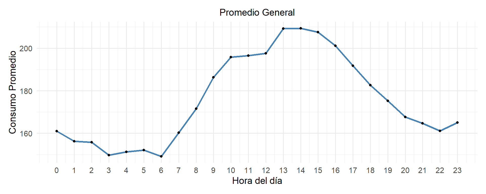

Debido a que no se utilizaran algoritmos que requieran conservar la forma de la serie de datos, es posible eliminar los registros faltantes.
Mostrar código
limpiar_datos <-function(datos) { datos_limpiados <- datos %>%select(-fecha_hora) %>%na.omit()return(datos_limpiados)}datos_limpiados <-limpiar_datos(datos_preparados)describir_datos(datos_limpiados)
Mostrar código
# datatable( head(datos_limpiados) )
6 Analisis Exploratorio de Datos Iniciales
6.1 Graficos de distribicion de frecuencia
Para la metodologia es deseable pero no es necesario que los datos esten balanceados, se requiere la presencia de la mayor cantidad de escenarios posibles (todos los dias y todas las horas), para darle sentido a los grupos que se obtendran mas adelante, la influencia del mes puede ser significativa en caso de que existan patrones de largo plazo (estaciones climaticas, operaciones temporales, entre otros), en los casos de estudio tenemos menos de un año de datos.
Mostrar código
library(ggplot2)library(patchwork)graficar_distribuciones <-function(datos, titulo_size =16, eje_size =12) {# Gráfico de distribución de meses p1 <-ggplot(datos, aes(x = mes)) +geom_bar(fill ="steelblue", color ="black") +theme_minimal(base_size =14) +labs(title ="Distribución por Mes", x ="Mes", y ="Frecuencia") +theme(plot.title =element_text(size = titulo_size, face ="bold"),axis.text.x =element_text(angle =45, hjust =1, size = eje_size),axis.text.y =element_text(size = eje_size),axis.title.x =element_text(size = eje_size),axis.title.y =element_text(size = eje_size) )# Gráfico de distribución de días de la semana p2 <-ggplot(datos, aes(x = dia_sem)) +geom_bar(fill ="darkgreen", color ="black") +theme_minimal(base_size =14) +labs(title ="Distribución por Día de la Semana", x ="Día", y ="Frecuencia") +theme(plot.title =element_text(size = titulo_size, face ="bold"),axis.text.x =element_text(angle =45, hjust =1, size = eje_size),axis.text.y =element_text(size = eje_size),axis.title.x =element_text(size = eje_size),axis.title.y =element_text(size = eje_size) )# Gráfico de distribución de horas p3 <-ggplot(datos, aes(x =factor(hora))) +geom_bar(fill ="darkred", color ="black") +theme_minimal(base_size =14) +labs(title ="Distribución por Hora", x ="Hora", y ="Frecuencia")+theme(plot.title =element_text(size = titulo_size, face ="bold"),axis.text.x =element_text(angle =45, hjust =1, size =6),axis.text.y =element_text(size = eje_size),axis.title.x =element_text(size = eje_size),axis.title.y =element_text(size = eje_size) )# Ajustar el diseño para evitar superposición p1 + p2 + p3 +plot_layout(ncol =3, guides ="collect") &theme(plot.margin =margin(10, 10, 10, 0))}# Llamada a la funcióngraficar_distribuciones(datos_limpiados, titulo_size =9, eje_size =9)
6.2 Tablas de distribución de frecuencias de las variables
Mostrar código
library(dplyr)generar_tablas_frecuencia <-function(datos) {# Función auxiliar para calcular la frecuencia absoluta y relativa calcular_frecuencia <-function(variable, nombre_variable) { tabla <- datos %>%count({{ variable }}) %>%mutate(Frecuencia_Relativa = n /sum(n),Porcentaje =round(Frecuencia_Relativa *100, 2) ) %>%rename(Valor = {{ variable }}, Frecuencia_Absoluta = n) %>%arrange(Valor)return(tabla) }# Generar las tablas para cada variable tabla_mes <-calcular_frecuencia(mes, "Mes") tabla_dia_sem <-calcular_frecuencia(dia_sem, "Día de la Semana") tabla_hora <-calcular_frecuencia(hora, "Hora")# Retornar las tablas en una listareturn(list(Tabla_Mes = tabla_mes,Tabla_Dia_Semana = tabla_dia_sem,Tabla_Hora = tabla_hora ))}# Llamada a la funcióntablas_frecuencia <-generar_tablas_frecuencia(datos_limpiados)# Mostrar las tablasdatatable( tablas_frecuencia$Tabla_Mes )
Mostrar código
datatable( tablas_frecuencia$Tabla_Dia_Semana )
Mostrar código
datatable( tablas_frecuencia$Tabla_Hora )
6.3 Magnitudes de la variable CONSUMO
Mostrar código
library(dplyr)library(moments) # Para curtosis y asimetríaanalisis_exploratorio_consumo <-function(datos) { resumen <- datos %>%summarise(Minimo =round(min(consumo, na.rm =TRUE), 2),Q1 =round(quantile(consumo, 0.25, na.rm =TRUE), 2),Mediana =round(median(consumo, na.rm =TRUE), 2),Media =round(mean(consumo, na.rm =TRUE), 2),Q3 =round(quantile(consumo, 0.75, na.rm =TRUE), 2),Maximo =round(max(consumo, na.rm =TRUE), 2),Rango =round(Maximo - Minimo, 2),Rango_Intercuartilico =round(Q3 - Q1, 2),Desviacion_Estandar =round(sd(consumo, na.rm =TRUE), 2),Coef_Variacion =round((Desviacion_Estandar / Media) *100, 2),Curtosis =round(kurtosis(consumo, na.rm =TRUE), 2),Asimetria =round(skewness(consumo, na.rm =TRUE), 2) )return(resumen)}# Llamada a la funciónanalisis_consumo <-analisis_exploratorio_consumo(datos_limpiados)# Mostrar la tabla con los resultadosdatatable( analisis_consumo )
6.4 Distribución de la variable CONSUMO por día
(Analisis del comportamiento del consumo, se identifican 2 zonas alta y baja carga)
Comparativo General vs día
Mostrar código
library(ggplot2)library(patchwork)graficar_distribucion_dia <-function(datos, dia_especifico) {# Verificar que el día ingresado es válido dias_validos <-c("lunes", "martes", "miércoles", "jueves", "viernes", "sábado", "domingo")if (!(dia_especifico %in% dias_validos)) {stop("El día ingresado no es válido. Debe ser uno de: lunes, martes, miércoles, jueves, viernes, sábado o domingo.") }# Gráfico general (todos los días) p_general <-ggplot(datos, aes(x = consumo)) +geom_histogram(fill ="steelblue", color ="black", bins =30) +theme_minimal(base_size =14) +labs(title ="Distribución General de Consumo",x ="Consumo", y ="Frecuencia") +theme(plot.title =element_text(size =14, hjust =0.5))# Gráfico para el día específico p_dia <-ggplot(datos %>%filter(as.character(dia_sem) == dia_especifico), aes(x = consumo)) +geom_histogram(fill ="darkorange", color ="black", bins =30) +theme_minimal(base_size =14) +labs(title =paste("Distribución de Consumo -", dia_especifico),x ="Consumo", y ="Frecuencia") +theme(plot.title =element_text(size =14, hjust =0.5))# Unir ambos gráficos en una fila#layout <- p_general + p_dia + plot_layout(ncol = 2) layout <- p_general +plot_layout(ncol =1)return(layout)}# Ejemplo de uso: Graficar el consumo general y para los martesgraficar_distribucion_dia(datos_limpiados, "lunes")
library(ggplot2)library(dplyr)library(patchwork)graficar_dos_dias <-function(datos, dia1, dia2) {# Lista de días válidos dias_validos <-c("lunes", "martes", "miércoles", "jueves", "viernes", "sábado", "domingo")# Validar que los días ingresados sean correctosif (!(dia1 %in% dias_validos) |!(dia2 %in% dias_validos)) {stop("Los días ingresados no son válidos. Deben ser: lunes, martes, miércoles, jueves, viernes, sábado o domingo.") }# Gráfico para el primer día p1 <-ggplot(datos %>%filter(as.character(dia_sem) == dia1), aes(x = consumo)) +geom_histogram(fill ="steelblue", color ="black", bins =30) +theme_minimal(base_size =14) +labs(title =paste("Distribución de Consumo -", dia1),x ="Consumo", y ="Frecuencia") +theme(plot.title =element_text(size =14, hjust =0.5))# Gráfico para el segundo día p2 <-ggplot(datos %>%filter(as.character(dia_sem) == dia2), aes(x = consumo)) +geom_histogram(fill ="darkorange", color ="black", bins =30) +theme_minimal(base_size =14) +labs(title =paste("Distribución de Consumo -", dia2),x ="Consumo", y ="Frecuencia") +theme(plot.title =element_text(size =14, hjust =0.5))# Unir ambos gráficos en una fila layout <- p1 + p2 +plot_layout(ncol =2)return(layout)}# Ejemplo de uso: Comparar consumo entre martes y viernesgraficar_dos_dias(datos_limpiados, "lunes", "domingo")
6.5 Distribucion horaria de la variable consumo
Mostrar código
library(ggplot2)library(dplyr)library(patchwork)graficar_general_vs_dia <-function(datos, dia) {# Lista de días válidos dias_validos <-c("lunes", "martes", "miércoles", "jueves", "viernes", "sábado", "domingo")# Validar que el día ingresado sea correctoif (!(dia %in% dias_validos)) {stop("El día ingresado no es válido. Debe ser: lunes, martes, miércoles, jueves, viernes, sábado o domingo.") }# Agrupar datos por hora y calcular promedio de consumo (todos los días) datos_general <- datos %>%group_by(hora) %>%summarise(consumo_promedio =mean(consumo, na.rm =TRUE))# Agrupar datos por hora pero solo para el día seleccionado datos_dia <- datos %>%filter(as.character(dia_sem) == dia) %>%group_by(hora) %>%summarise(consumo_promedio =mean(consumo, na.rm =TRUE))# Gráfico de la distribución general p1 <-ggplot(datos_general, aes(x = hora, y = consumo_promedio)) +geom_line(color ="steelblue", size =1.2) +geom_point(color ="black") +theme_minimal(base_size =14) +labs(title ="General",x ="Hora del día", y ="Consumo Promedio") +scale_x_continuous(breaks =0:23) +theme(plot.title =element_text(size =14, hjust =0.5))# Gráfico de la distribución para el día específico p2 <-ggplot(datos_dia, aes(x = hora, y = consumo_promedio)) +geom_line(color ="darkorange", size =1.2) +geom_point(color ="black") +theme_minimal(base_size =14) +labs(title =paste("Día", dia),x ="Hora del día", y ="Consumo Promedio") +scale_x_continuous(breaks =0:23) +theme(plot.title =element_text(size =14, hjust =0.5))# Unir los gráficos en una fila#layout <- p1 + p2 + plot_layout(ncol = 2) layout <- p1 +plot_layout(ncol =1)return(layout)}# Ejemplo de uso: General vs Martesgraficar_general_vs_dia(datos_limpiados, "lunes")
Mostrar código
graficar_dia_vs_dia <-function(datos, dia1, dia2) {# Lista de días válidos dias_validos <-c("lunes", "martes", "miércoles", "jueves", "viernes", "sábado", "domingo")# Validar que los días ingresados sean correctosif (!(dia1 %in% dias_validos) |!(dia2 %in% dias_validos)) {stop("Los días ingresados no son válidos. Deben ser: lunes, martes, miércoles, jueves, viernes, sábado o domingo.") }# Agrupar datos por hora para cada día seleccionado datos_dia1 <- datos %>%filter(as.character(dia_sem) == dia1) %>%group_by(hora) %>%summarise(consumo_promedio =mean(consumo, na.rm =TRUE)) datos_dia2 <- datos %>%filter(as.character(dia_sem) == dia2) %>%group_by(hora) %>%summarise(consumo_promedio =mean(consumo, na.rm =TRUE))# Gráfico para el primer día p1 <-ggplot(datos_dia1, aes(x = hora, y = consumo_promedio)) +geom_line(color ="steelblue", size =1.2) +geom_point(color ="black") +theme_minimal(base_size =14) +labs(title =paste("Promedio Hora", dia1),x ="Hora del día", y ="Consumo Promedio") +scale_x_continuous(breaks =0:23) +theme(plot.title =element_text(size =14, hjust =0.5))# Gráfico para el segundo día p2 <-ggplot(datos_dia2, aes(x = hora, y = consumo_promedio)) +geom_line(color ="darkorange", size =1.2) +geom_point(color ="black") +theme_minimal(base_size =14) +labs(title =paste("Promedio Hora -", dia2),x ="Hora del día", y ="Consumo Promedio") +scale_x_continuous(breaks =0:23) +theme(plot.title =element_text(size =14, hjust =0.5))# Unir los gráficos en una fila layout <- p1 + p2 +plot_layout(ncol =2)return(layout)}# Ejemplo de uso: Comparar consumo entre martes y viernesgraficar_dia_vs_dia(datos_limpiados, "martes", "viernes")

6.6 Identificación estadistica y eliminación de atipicos
Inicialmente no es recomendable borrar los atipicos hasta asegurarnos de que no sean parte de un patron de comportamiento, en este caso dichos valores corresponden a datos puntuales que no representan patrones de comportamiento.
Mostrar código
# Cargar librerías necesariaslibrary(ggplot2)graficar_boxplot <-function(datos, width =2, height =2) { p <-ggplot(datos, aes(y = consumo)) +geom_boxplot(fill ="steelblue", color ="black", outlier.size =1.5) +theme_minimal(base_size =10) +# Tamaño de fuente ajustadolabs(title ="Boxplot de Consumo", y ="Consumo") +theme(axis.text.x =element_blank(),plot.margin =margin(5, 5, 5, 5) # Márgenes más compactos ) +coord_cartesian(clip ="off") # Evita que se recorten puntosprint(p) # Mostrar el gráficoreturn(p) # Retornar el gráfico}# Llamar la función con tamaño ajustable# resultados_boxplot <- graficar_boxplot(datos_limpiados, width = 2, height = 2)
Mostrar código
# Llamar la función con tamaño ajustableresultados_boxplot <-graficar_boxplot(datos_limpiados)
6.7 Segmentación de outliers
Mostrar código
# Función para describir los outliers (superior e inferior)describir_outliers <-function(datos) {# Calcular los cuartiles y el rango intercuartílico (IQR) Q1 <-quantile(datos$consumo, 0.25, na.rm =TRUE) Q3 <-quantile(datos$consumo, 0.75, na.rm =TRUE) IQR <- Q3 - Q1# Calcular los límites inferior y superior para los outliers lower_bound <- Q1 -1.5* IQR upper_bound <- Q3 +1.5* IQR# Filtrar los datos para los outliers outliers_superior <- datos %>%filter(consumo > upper_bound) outliers_inferior <- datos %>%filter(consumo < lower_bound)# Calcular conteo y porcentaje de outliers total_datos <-nrow(datos)# Tabla para los outliers superiores tabla_outliers_superior <-tibble(Rango =paste(upper_bound, "a", max(datos$consumo, na.rm =TRUE)),Conteo =nrow(outliers_superior),Porcentaje =round( (nrow(outliers_superior) / total_datos) *100, 2) )# Tabla para los outliers inferiores tabla_outliers_inferior <-tibble(Rango =paste(min(datos$consumo, na.rm =TRUE), "a", lower_bound),Conteo =nrow(outliers_inferior),Porcentaje =round( (nrow(outliers_inferior) / total_datos) *100 , 2) )# Devolver las dos tablasreturn(list(outliers_superior = tabla_outliers_superior,outliers_inferior = tabla_outliers_inferior ))}# Probar la función con el datasetresultados_outliers <-describir_outliers(datos_limpiados)# Ver los resultadosdatatable( resultados_outliers$outliers_superior )
# Función para describir todos los outliers con la columna de rangodescribir_outliers_con_rango <-function(datos) {# Calcular los cuartiles y el rango intercuartílico (IQR) Q1 <-quantile(datos$consumo, 0.25, na.rm =TRUE) Q3 <-quantile(datos$consumo, 0.75, na.rm =TRUE) IQR <- Q3 - Q1# Calcular los límites inferior y superior para los outliers lower_bound <- Q1 -1.5* IQR upper_bound <- Q3 +1.5* IQR# Filtrar los outliers outliers <- datos %>%mutate(rango_outlier =case_when( consumo < lower_bound ~paste("Inferior (<", lower_bound, ")"), consumo > upper_bound ~paste("Superior (>", upper_bound, ")"),TRUE~"No Outlier" )) %>%filter(consumo < lower_bound | consumo > upper_bound)# Devolver la tabla de outliers con rangoreturn(outliers)}# Probar la función con el datasettabla_outliers_con_rango <-describir_outliers_con_rango(datos_limpiados)# Ver los resultadosdatatable( tabla_outliers_con_rango )
6.9 Distribución de outliers (todos los rangos)
Mostrar código
library(ggplot2)library(dplyr)library(patchwork) # Para organizar los gráficos en una filalibrary(scales) # Para formato de porcentajeanalizar_outliers_horarios_dias_distribucion <-function(datos) {# Validar que las columnas necesarias existen columnas_requeridas <-c("año", "mes", "dia", "dia_sem", "hora", "consumo")if (!all(columnas_requeridas %in%colnames(datos))) {stop("El dataset debe contener las columnas: año, mes, dia, dia_sem, hora y consumo") }# Calcular límites de outliers usando IQR Q1 <-quantile(datos$consumo, 0.25, na.rm =TRUE) Q3 <-quantile(datos$consumo, 0.75, na.rm =TRUE) IQR <- Q3 - Q1 lower_bound <- Q1 -1.5* IQR upper_bound <- Q3 +1.5* IQR# Agregar columna de detección de outliers datos <- datos %>%mutate(es_outlier = consumo < lower_bound | consumo > upper_bound)# 📌 1️⃣ Proporción de outliers por hora del día df_outliers_hora <- datos %>%group_by(hora) %>%summarise(proporcion_outliers =mean(es_outlier, na.rm =TRUE)) p1 <-ggplot(df_outliers_hora, aes(x = hora, y = proporcion_outliers)) +geom_line(color ="blue") +geom_point(color ="red") +scale_y_continuous(labels =percent_format(accuracy =1)) +theme_minimal() +labs(title ="Frecuencia de Outliers por Hora del Día",x ="Hora del día",y ="Proporción de Outliers") +theme(axis.text.x =element_text(angle =45, hjust =1))# 📌 2️⃣ Proporción de outliers por día de la semana df_outliers_dia <- datos %>%group_by(dia_sem) %>%summarise(proporcion_outliers =mean(es_outlier, na.rm =TRUE)) # Ordenar días de la semana correctamente niveles_dia_sem <-c("lunes", "martes", "miércoles", "jueves", "viernes", "sábado", "domingo") df_outliers_dia$dia_sem <-factor(df_outliers_dia$dia_sem, levels = niveles_dia_sem) p2 <-ggplot(df_outliers_dia, aes(x = dia_sem, y = proporcion_outliers)) +geom_bar(stat ="identity", fill ="steelblue") +scale_y_continuous(labels =percent_format(accuracy =1)) +theme_minimal() +labs(title ="Frecuencia de Outliers por Día de la Semana",x ="Día de la semana",y ="Proporción de Outliers") +theme(axis.text.x =element_text(angle =45, hjust =1))# 📌 3️⃣ Distribución de los valores de los outliers df_outliers <- datos %>%filter(es_outlier ==TRUE) p3 <-ggplot(df_outliers, aes(x = consumo)) +geom_histogram(fill ="darkred", bins =20, alpha =0.7, color ="black") +theme_minimal() +labs(title ="Distribución de Valores de Outliers",x ="Consumo (solo outliers)",y ="Frecuencia") +theme(axis.text.x =element_text(angle =45, hjust =1))# Mostrar los 3 gráficos en una misma fila final_plot <- p1 + p2 + p3 +plot_layout(ncol =3)print(final_plot) # Mostrar el gráfico combinado#return(final_plot) # Retornar el gráfico si se quiere guardar}# Ejecutar la función con el datasetanalizar_outliers_horarios_dias_distribucion(datos_limpiados)
6.10 Distribucion de outliers por rango
Mostrar código
# Función ajustada para analizar outliers de un rango específicoanalizar_outliers_rango <-function(datos, rango ="superior") {# Validar que las columnas necesarias existen columnas_requeridas <-c("año", "mes", "dia", "dia_sem", "hora", "consumo")if (!all(columnas_requeridas %in%colnames(datos))) {stop("El dataset debe contener las columnas: año, mes, dia, dia_sem, hora y consumo") }# Calcular límites de outliers usando IQR Q1 <-quantile(datos$consumo, 0.25, na.rm =TRUE) Q3 <-quantile(datos$consumo, 0.75, na.rm =TRUE) IQR <- Q3 - Q1 lower_bound <- Q1 -1.5* IQR upper_bound <- Q3 +1.5* IQR# Filtrar según el rango de outliers solicitadoif (rango =="superior") { datos <- datos %>%mutate(es_outlier = consumo > upper_bound) %>%filter(es_outlier ==TRUE) } elseif (rango =="inferior") { datos <- datos %>%mutate(es_outlier = consumo < lower_bound) %>%filter(es_outlier ==TRUE) } else {stop("El rango debe ser 'superior' o 'inferior'.") }# 📌 1️⃣ Proporción de outliers por hora del día df_outliers_hora <- datos %>%group_by(hora) %>%summarise(proporcion_outliers =mean(es_outlier, na.rm =TRUE)) p1 <-ggplot(df_outliers_hora, aes(x = hora, y = proporcion_outliers)) +geom_line(color ="blue") +geom_point(color ="red") +scale_y_continuous(labels =percent_format(accuracy =1)) +theme_minimal() +labs(title =paste("Frecuencia de Outliers por Hora del Día (", rango, ")", sep =""),x ="Hora del día",y ="Proporción de Outliers") +theme(axis.text.x =element_text(angle =45, hjust =1))# 📌 2️⃣ Proporción de outliers por día de la semana df_outliers_dia <- datos %>%group_by(dia_sem) %>%summarise(proporcion_outliers =mean(es_outlier, na.rm =TRUE)) # Ordenar días de la semana correctamente niveles_dia_sem <-c("lunes", "martes", "miércoles", "jueves", "viernes", "sábado", "domingo") df_outliers_dia$dia_sem <-factor(df_outliers_dia$dia_sem, levels = niveles_dia_sem) p2 <-ggplot(df_outliers_dia, aes(x = dia_sem, y = proporcion_outliers)) +geom_bar(stat ="identity", fill ="steelblue") +scale_y_continuous(labels =percent_format(accuracy =1)) +theme_minimal() +labs(title =paste("Frecuencia de Outliers por Día de la Semana (", rango, ")", sep =""),x ="Día de la semana",y ="Proporción de Outliers") +theme(axis.text.x =element_text(angle =45, hjust =1))# 📌 3️⃣ Distribución de los valores de los outliers p3 <-ggplot(datos, aes(x = consumo)) +geom_histogram(fill ="darkred", bins =20, alpha =0.7, color ="black") +theme_minimal() +labs(title =paste("Distribución de Valores de Outliers (", rango, ")", sep =""),x ="Consumo (solo outliers)",y ="Frecuencia") +theme(axis.text.x =element_text(angle =45, hjust =1))# Mostrar los 3 gráficos en una misma fila final_plot <- p1 + p2 + p3 +plot_layout(ncol =3)print(final_plot) # Mostrar el gráfico combinado#return(final_plot) # Retornar el gráfico si se quiere guardar}# Ejecutar la función con el dataset y el rango 'superior' o 'inferior'analizar_outliers_rango(datos_limpiados, rango ="superior")
Mostrar código
analizar_outliers_rango(datos_limpiados, rango ="inferior")
6.11 Eliminacion de outliers
Mostrar código
# Eliminacion de outliers (si aplica) #####eliminar_outliers <-function(datos, columna ="consumo") {# Calcular cuartiles y rango intercuartílico Q1 <-quantile(datos[[columna]], 0.25, na.rm =TRUE) Q3 <-quantile(datos[[columna]], 0.75, na.rm =TRUE) IQR_value <- Q3 - Q1# Definir límites para detectar outliers limite_inferior <- Q1 -1.5* IQR_value limite_superior <- Q3 +1.5* IQR_value# Filtrar datos dentro de los límites datos_sin_outliers <- datos[datos[[columna]] >= limite_inferior & datos[[columna]] <= limite_superior, ]return(datos_sin_outliers)}# Línea de pruebadatos_limpios_NA_OUT <-eliminar_outliers(datos_limpiados)
Mostrar código
# Llamada a la funciónanalisis_consumo_NA_OUT <-analisis_exploratorio_consumo(datos_limpios_NA_OUT)
6.12 Comparativo descripcion de datos
Con outliers
Mostrar código
# Mostrar la tabla con los resultadosdatatable( analisis_consumo )
sin outliers
Mostrar código
datatable( analisis_consumo_NA_OUT )
7 Preparación para Identificacion de Grupos (Normalización)
Mostrar código
# Normalizar los datos de consumo (Z score mantiene la distribucion de los datos) #####normalizar_consumo <-function(datos, metodo ="zscore") {# Verificar si la columna 'consumo' existeif (!"consumo"%in%colnames(datos)) {stop("El dataset no contiene la columna 'consumo'.") }# Normalizar según el método elegidoif (metodo =="zscore") { datos <- datos %>%mutate(consumo_normalizado = (consumo -mean(consumo, na.rm =TRUE)) /sd(consumo, na.rm =TRUE)) } elseif (metodo =="minmax") { datos <- datos %>%mutate(consumo_normalizado = (consumo -min(consumo, na.rm =TRUE)) / (max(consumo, na.rm =TRUE) -min(consumo, na.rm =TRUE))) } else {stop("Método no válido. Usa 'zscore' o 'minmax'.") }return(datos)}# Ejemplo de uso:datos_normalizados <-normalizar_consumo(datos_limpios_NA_OUT, metodo ="zscore")datatable( head(datos_normalizados) )
8 Calculo del numero Optimo de Grupos
Estadisticos de calculo
Mostrar código
# Librerías necesariaslibrary(ggplot2)library(factoextra)library(cluster)library(DT)# Función para calcular K óptimo y generar gráficocalcular_k_optimo_grafico <-function(dataset, metodo, k_max =10) { datos <- dataset %>%select(consumo_normalizado)if (metodo =="codo") { wss <-sapply(1:k_max, function(k) {kmeans(datos, centers = k, nstart =10)$tot.withinss }) df_wss <-data.frame(K =1:k_max, WSS = wss) grafico <-ggplot(df_wss, aes(x = K, y = WSS)) +geom_point() +geom_line() +ggtitle("Método del Codo") +xlab("Número de Clusters") +ylab("Suma de cuadrados intra-cluster") }elseif (metodo =="silhouette") { sil_width <-sapply(2:k_max, function(k) { km <-kmeans(datos, centers = k, nstart =10)mean(silhouette(km$cluster, dist(datos))[, 3]) }) df_sil <-data.frame(K =2:k_max, Silhouette = sil_width) grafico <-ggplot(df_sil, aes(x = K, y = Silhouette)) +geom_point() +geom_line() +ggtitle("Método de Silhouette") +xlab("Número de Clusters") +ylab("Coeficiente Silhouette Promedio") }elseif (metodo =="gap_stat") { gap_stat <-clusGap(datos, FUN = kmeans, nstart =10, K.max = k_max, B =50) grafico <-fviz_gap_stat(gap_stat) }else {stop("Método no reconocido. Usa 'codo', 'silhouette' o 'gap_stat'") }print(grafico)}calcular_k_optimo_tabla <-function(dataset, metodo, k_max =10) { datos <- dataset %>%select(consumo_normalizado)if (metodo =="codo") { wss <-sapply(1:k_max, function(k) {kmeans(datos, centers = k, nstart =10)$tot.withinss }) resultados <-data.frame(K =1:k_max, WSS = wss) }elseif (metodo =="silhouette") { sil_width <-sapply(2:k_max, function(k) { km <-kmeans(datos, centers = k, nstart =10)mean(silhouette(km$cluster, dist(datos))[, 3]) }) resultados <-data.frame(K =2:k_max, Silhouette = sil_width) }elseif (metodo =="gap_stat") { gap_stat <-clusGap(datos, FUN = kmeans, nstart =10, K.max = k_max, B =50) resultados <-data.frame(K =1:k_max, GAP = gap_stat$Tab[, "gap"], SE = gap_stat$Tab[, "SE.sim"]) }else {stop("Método no reconocido. Usa 'codo', 'silhouette' o 'gap_stat'") } DT::datatable(resultados, options =list(pageLength =5)) # No usar print()}
Metodo del Codo
Mostrar código
# Llamar las funciones con el dataset normalizadocalcular_k_optimo_grafico(datos_normalizados, metodo ="codo")
Mostrar código
calcular_k_optimo_tabla(datos_normalizados, metodo ="codo")
Metodo de Silhouette
Mostrar código
# Llamar las funciones con el dataset normalizadocalcular_k_optimo_grafico(datos_normalizados, metodo ="silhouette")
Mostrar código
calcular_k_optimo_tabla(datos_normalizados, metodo ="silhouette")
Metodo de gap_stat
Mostrar código
# Llamar las funciones con el dataset normalizadocalcular_k_optimo_grafico(datos_normalizados, metodo ="gap_stat")
Mostrar código
calcular_k_optimo_tabla(datos_normalizados, metodo ="gap_stat")
Numero optimo de grupos
Mostrar código
# Función para recomendar el número óptimo de clusters #####library(cluster)library(factoextra)library(dplyr)library(DT)determinar_num_clusters <-function(data, max_k =10) {# Elbow Method (WCSS - Within Cluster Sum of Squares) elbow <-fviz_nbclust(data, kmeans, method ="wss", k.max = max_k)$data opt_k_elbow <-which.max(diff(diff(elbow$y))) +1# Encontrar el "codo"# Silhouette Method silhouette <-fviz_nbclust(data, kmeans, method ="silhouette", k.max = max_k)$data opt_k_silhouette <- silhouette$clusters[which.max(silhouette$y)]# Gap Statistic gap_stat <-clusGap(data, FUN = kmeans, K.max = max_k, B =50) opt_k_gap <-maxSE(gap_stat$Tab[, "gap"], gap_stat$Tab[, "SE.sim"]) # Regla de 1SE# Crear tabla con los resultados de cada métrica resultados <-data.frame(Metodo =c("Elbow", "Silhouette", "Gap Statistic"),K_Optimo =c(opt_k_elbow, opt_k_silhouette, opt_k_gap) )# Ranking de número de clusters (basado en cuántas veces aparece cada valor) ranking <- resultados %>%count(K_Optimo, name ="Frecuencia") %>%arrange(desc(Frecuencia), K_Optimo)# Retornar las tablas para su visualización en Quartolist(Resultados = resultados, Ranking = ranking, Gap_Stat = gap_stat)}# Ejecutar la función con datos normalizadosresultado <-determinar_num_clusters(datos_normalizados[, "consumo_normalizado"])# Mostrar tablas en Quartoresultado$Resultados |> DT::datatable()
Mostrar código
resultado$Ranking |> DT::datatable()
9 Creación de Grupos
Mostrar código
# Función para aplicar clustering###### Cargar librerías necesariaslibrary(cluster)library(factoextra)library(dplyr)library(DT)library(dbscan)aplicar_clustering <-function(datos, num_clusters, metodo ="kmeans") {# Seleccionar solo la variable de consumo normalizado para la agrupación datos_clustering <- datos %>%select(consumo_normalizado)# Aplicar el algoritmo de clustering según el método seleccionadoif (metodo =="kmeans") { modelo <-kmeans(datos_clustering, centers = num_clusters, nstart =25) datos$cluster <-as.factor(modelo$cluster) } elseif (metodo =="hclust") { distancia <-dist(datos_clustering, method ="euclidean") jerarquico <-hclust(distancia, method ="ward.D2") datos$cluster <-as.factor(cutree(jerarquico, k = num_clusters)) } elseif (metodo =="dbscan") {library(dbscan) modelo <-dbscan(datos_clustering, eps =0.2, minPts =5) datos$cluster <-as.factor(modelo$cluster) } else {stop("Método no soportado. Usa 'kmeans', 'hclust' o 'dbscan'.") }# Mostrar la tabla en formato DT tabla_resultado <-datatable(datos, options =list(pageLength =10, scrollX =TRUE))print(tabla_resultado) # Mostrar la tablareturn(datos) # Retornar el dataset con la columna de cluster asignado}# Ejemplo de uso:datos_clusterizados <-aplicar_clustering(datos_normalizados, num_clusters =2, metodo ="kmeans")datatable(datos_clusterizados)
9.1 Validación de Grupos
9.2 Exploracion e interpretación de grupos
10 Edición o Ajuste de Grupos (si aplica)
10.1 Validación de grupos editado
10.2 Exploracion e interpretación de grupos editado
11 Modelos de LB
11.1 Construcción
11.2 Metricas
11.3 Comparaciones contra modelos sin agrupaciones